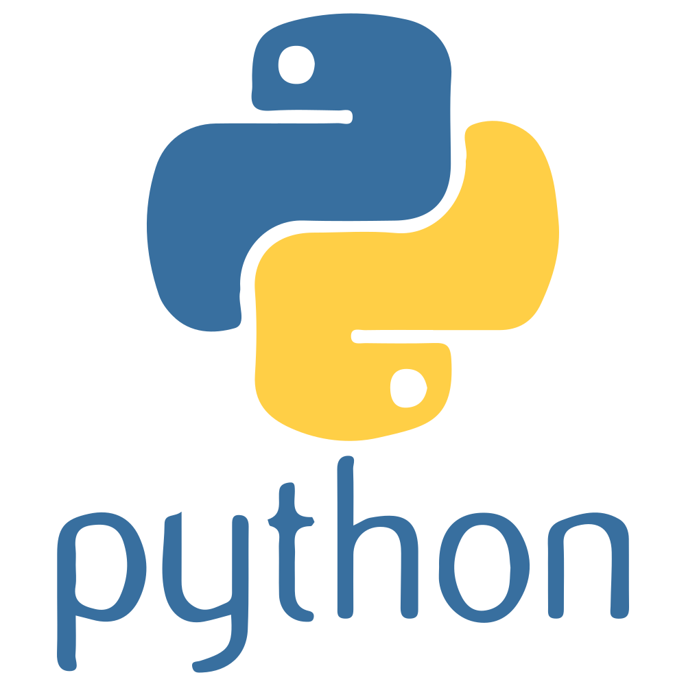

LANGUAGE
Python
쉬운 문법 덕분에 언어 자체보다 로직과 데이터 흐름에 집중할 수 있는 언어입니다. AI 시대의 표준 언어로 빠르게 확장되고 있는 만큼, 데이터를 다루고 API를 연결하는 감각을 훈련해 이후 어떤 AI 도구와도 자연스럽게 협업할 수 있는 기초 체력을 기릅니다.
전체 12건
1. OT — Python 철학과 인터프리터 동작 방식
Python이 코드를 한 줄씩 해석해 실행하는 인터프리터 언어인 이유와 12주 학습 로드맵을 함께 확인합니다
컴파일 언어와 달리 소스 코드를 바로 실행하는 인터프리터 구조, 그리고 'Simple is better than complex' 같은 Python의 설계 철학(PEP 20)이 실제 문법에 어떻게 반영되어 있는지 살펴봅니다.
2. 변수와 자료형, 동적 타이핑
변수 선언 없이 값을 담을 수 있는 동적 타이핑의 원리와, 그로 인해 생기는 실수를 미리 방지하는 법을 다룹니다
type()과 isinstance()로 런타임에 타입을 확인하는 방법, 동적 타이핑이 주는 유연함과 트레이드오프를 실제 버그 사례로 체감합니다. 타입 힌트(type hint)를 도입해 협업 시 가독성을 높이는 방법도 함께 다룹니다.
3. 리스트·딕셔너리와 컴프리헨션
리스트, 딕셔너리를 자유자재로 다루고 컴프리헨션 문법으로 간결한 코드를 작성하는 법을 익힙니다
for문으로 작성한 반복 로직을 리스트/딕셔너리 컴프리헨션으로 재작성하며 Python다운(Pythonic) 코드 스타일을 체득합니다. 중첩 컴프리헨션과 조건부 표현식까지 실전 예제로 다룹니다.
4. 함수와 일급 객체
함수를 변수에 담고 다른 함수의 인자로 전달할 수 있는 일급 객체 개념을 다룹니다
함수를 값처럼 다루는 일급 객체(first-class citizen) 특성을 활용해 고차 함수, 클로저, 데코레이터의 기본 동작 원리를 실습합니다. *args/**kwargs로 가변 인자를 다루는 법도 함께 익힙니다.
5. 클래스와 덕 타이핑
클래스 문법과 함께, '오리처럼 걷고 울면 오리로 취급'하는 Python 특유의 덕 타이핑을 이해합니다
상속 없이도 동일한 인터페이스(메서드)를 구현하면 같은 방식으로 다룰 수 있는 덕 타이핑의 원리를 실습합니다. Java 같은 정적 타입 언어의 다형성과 비교하며 Python의 유연함이 어디서 오는지 이해합니다.
6. 파일 입출력과 예외 처리
with 문으로 파일을 안전하게 열고 닫으며, try-except로 예상 가능한 오류에 대응하는 법을 다룹니다
컨텍스트 매니저(with)가 파일을 자동으로 닫아주는 원리와, 여러 예외 타입을 구분해 처리하는 except 구조를 실습합니다. 커스텀 예외 클래스를 직접 만들어보는 것까지 다룹니다.
7. 모듈·패키지와 가상환경
코드를 모듈·패키지로 구조화하고, venv로 프로젝트별 독립된 실행 환경을 관리하는 법을 익힙니다
import 시스템이 모듈을 찾는 경로 규칙과 __init__.py의 역할을 이해합니다. 가상환경을 직접 만들고 requirements.txt로 의존성을 관리하는 실전 워크플로우를 연습합니다.
8. NumPy·Pandas로 데이터 다루기
NumPy 배열 연산과 Pandas DataFrame으로 대량의 데이터를 효율적으로 가공하는 법을 실습합니다
순수 Python 반복문과 NumPy 벡터 연산의 속도 차이를 직접 비교하고, Pandas로 CSV 데이터를 불러와 필터링·집계·정렬하는 실전 데이터 처리 흐름을 익힙니다.
9. API 호출과 requests
requests 라이브러리로 외부 API를 호출하고 JSON 응답을 파싱해 활용하는 법을 다룹니다
GET/POST 요청을 보내고 상태 코드·헤더·바디를 다루는 기본기부터, 인증 토큰을 포함한 요청, 에러 응답 처리까지 실전 API 연동 패턴을 실습합니다.
10. AI/LLM API 연동 기초
OpenAI·Anthropic 같은 LLM API를 Python 코드에서 호출해 응답을 처리하는 기본 패턴을 익힙니다
API 키 관리, 프롬프트 구성, 스트리밍 응답 처리 같은 LLM API 연동의 실전 패턴을 다룹니다. 응답을 파싱해 애플리케이션 로직에 연결하는 작은 예제를 직접 구현합니다.
11. 데이터 파이프라인 설계
데이터 수집부터 가공, 저장까지 이어지는 파이프라인을 여러 모듈로 나눠 설계하는 법을 다룹니다
지금까지 배운 파일 입출력, API 호출, Pandas 가공 로직을 하나의 파이프라인으로 연결하는 설계 방법을 연습합니다. 각 단계를 함수/모듈로 분리해 재사용 가능하게 만드는 것이 핵심입니다.
12. 미니 프로젝트 — 데이터 분석 자동화 도구
지금까지 배운 데이터 처리와 API 연동 지식을 총동원해 실제 동작하는 분석 자동화 도구를 직접 구현합니다
외부 데이터를 수집·가공하고 AI API로 요약·분석까지 자동화하는 미니 프로젝트를 진행합니다. 코드 리뷰를 통해 실무 데이터 파이프라인 설계 관점의 피드백을 받습니다.